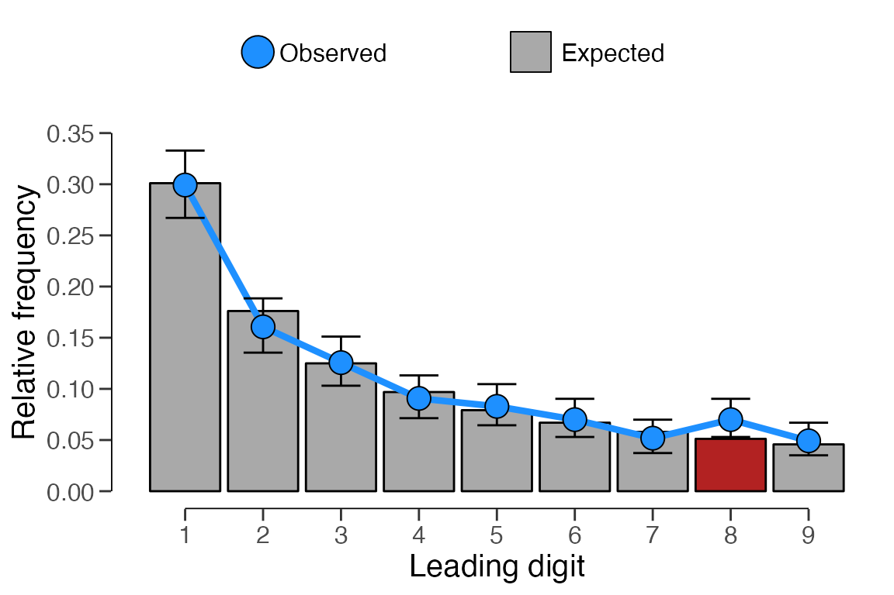
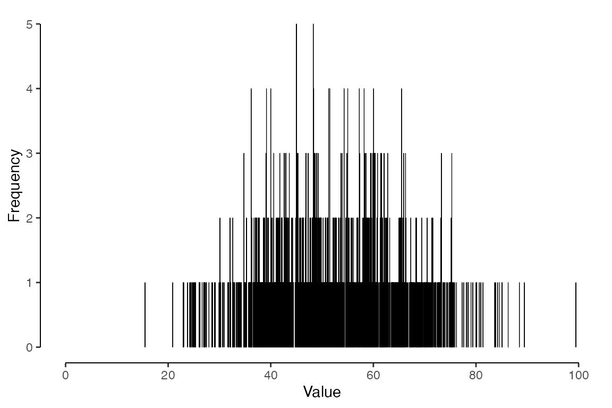
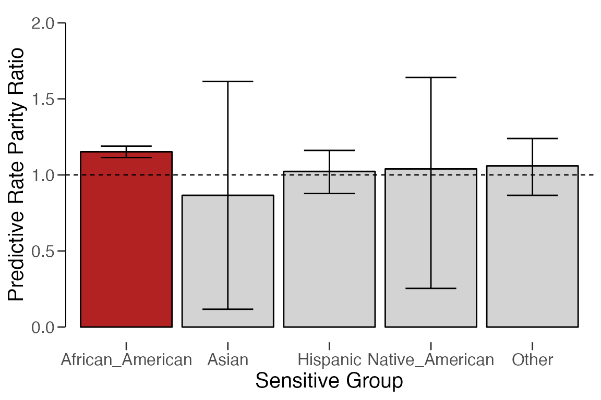

Welcome to the ‘Get started’ vignette of the jfa package. jfa is an R package that provides Bayesian and classical statistical methods for audit sampling, data auditing, and algorithm auditing. First, the package provides functions for planning, performing, evaluating, and reporting an audit sample compliant with international standards on auditing. Second, the package includes functions for auditing data, such as testing the distribution of first digits of a data set against Benford’s law. Finally, the package implements functions to perform bias detection and compute fairness metrics for predictive models.
This vignette provides a simple explanation of the functionality in the package. For a more detailed explanation of the functions in the package, see the other vignettes at the package website.
jfa provides a user-friendly interface for statistical audit sampling. The standard audit sampling workflow is divided into four distinct parts: planning a sample, selecting the sample from the population, executing the audit and evaluating the misstatement by extrapolating the errors in the sample to the population.
Figure 1: The audit sampling workflow
See the package vignette Audit sampling: Get started for more details about jfa’s audit sampling functionality.
To illustrate jfa’s’ statistical audit sampling
functionality, consider the BuildIt data set that comes
with the package. This data consists of 3500 items from a financial
statement line item, each of which has a booked value and (for
illustrative purposes) a true (audit) value.
## ID bookValue auditValue
## 1 82884 242.61 242.61
## 2 25064 642.99 642.99
## 3 81235 628.53 628.53
## 4 71769 431.87 431.87
## 5 55080 620.88 620.88
## 6 93224 501.76 501.76The first step in the audit sampling workflow is to calculate a
minimum required sample size given the purpose of the sample. You can
use the sample to 1) obtain evidence for or against the hypothesis that
the misstatement in the population is lower than the performance
materiality and / or 2) estimate the misstatement in the population. The
planning() function can be used to calculate this minimum
required sample size.
# Stage 1: Planning
stage1 <- planning(
materiality = 0.03, expected = 0.01,
likelihood = "poisson", conf.level = 0.95
)
summary(stage1)##
## Classical Audit Sample Planning Summary
##
## Options:
## Confidence level: 0.95
## Materiality: 0.03
## Hypotheses: H₀: Θ >= 0.03 vs. H₁: Θ < 0.03
## Expected: 0.01
## Likelihood: poisson
##
## Results:
## Minimum sample size: 220
## Tolerable errors: 2.2
## Expected most likely error: 0.01
## Expected upper bound: 0.02997
## Expected precision: 0.01997
## Expected p-value: 0.049761The selection() function can be used to select the
required samples from the population.
# Stage 2: Selection
stage2 <- selection(
data = BuildIt, size = stage1,
units = "values", values = "bookValue",
method = "interval", start = 1
)
summary(stage2)##
## Audit Sample Selection Summary
##
## Options:
## Requested sample size: 220
## Sampling units: monetary units
## Method: fixed interval sampling
## Starting point: 1
##
## Data:
## Population size: 3500
## Population value: 1403221
## Selection interval: 6378.3
##
## Results:
## Selected sampling units: 220
## Proportion of value: 0.080554
## Selected items: 220
## Proportion of size: 0.062857
# Stage 3: Execution
sample <- stage2[["sample"]]The evaluation() function can be used to evaluate the
misstatement in the sample.
# Stage 4: Evaluation
stage4 <- evaluation(
materiality = 0.03, method = "stringer.poisson",
conf.level = 0.95, data = sample,
values = "bookValue", values.audit = "auditValue"
)
summary(stage4)##
## Classical Audit Sample Evaluation Summary
##
## Options:
## Confidence level: 0.95
## Materiality: 0.03
## Method: stringer.poisson
##
## Data:
## Sample size: 220
## Number of errors: 5
## Sum of taints: 2.9999929
##
## Results:
## Most likely error: 0.013636
## 95 percent confidence interval: [0, 0.034119]
## Precision: 0.020482See the package vignette Data auditing: Get started for more details about jfa’s data auditing functionality.
The digit_test() function can be used to test the
distribution of leading or last digits in a variable against a
pre-specified distribution (e.g., Benford’s law).
# Digit distribution test
x <- digit_test(sinoForest$value, check = "first", reference = "benford")
print(x)##
## Classical Digit Distribution Test
##
## data: sinoForest$value
## n = 772, MAD = 0.0065981, X-squared = 7.6517, df = 8, p-value = 0.4682
## alternative hypothesis: leading digit(s) are not distributed according to the benford distribution.
plot(x)
The repeated_test() function can be used to test the
numbers in a variable for repeated values.
# Repeated values test
x <- repeated_test(sanitizer$value, check = "lasttwo", samples = 5000)
print(x)##
## Classical Repeated Values Test
##
## data: sanitizer$value
## n = 1600, AF = 1.5225, p-value = 0.0024
## alternative hypothesis: average frequency in data is greater than for random data.
plot(x)
See the package vignette Algorithm auditing: Get started for more details about jfa’s algorithm auditing functionality.
The model_fairness() function can be used to assess
fairness and bias in a machine learning algorithm.
# Model Fairness
x <- model_fairness(compas, "Ethnicity", "TwoYrRecidivism", "Predicted",
privileged = "Caucasian", positive = "yes"
)
print(x)##
## Classical Algorithmic Fairness Test
##
## data: compas
## n = 6172, X-squared = 18.799, df = 5, p-value = 0.002095
## alternative hypothesis: fairness metrics are not equal across groups
##
## sample estimates:
## African_American: 1.1522 [1.1143, 1.1891], p-value = 5.4523e-05
## Asian: 0.86598 [0.11706, 1.6149], p-value = 1
## Hispanic: 1.0229 [0.87836, 1.1611], p-value = 0.78393
## Native_American: 1.0392 [0.25396, 1.6406], p-value = 1
## Other: 1.0596 [0.86578, 1.2394], p-value = 0.5621
## alternative hypothesis: true odds ratio is not equal to 1
plot(x)